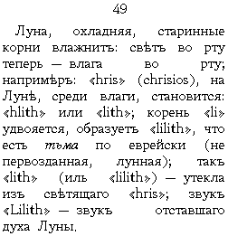
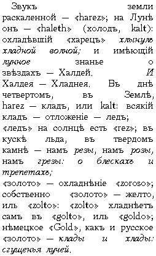
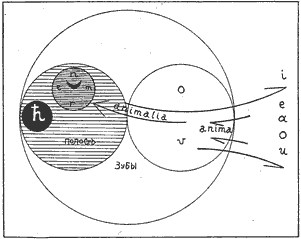
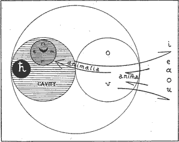
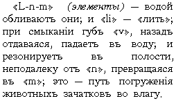
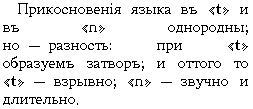
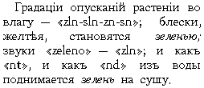
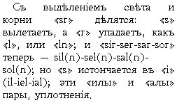
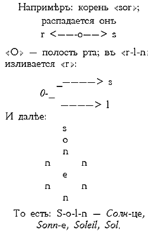

Glossolalia (Section 49)
GLOSSOLALIA

The Luna, as it cools down, moistens the ancient roots: the light in the mouth is now -- moisture in the mouth; for example: "hris" (chrisios-chrysios) on Luna, amidst the moisture, becomes: "hlith" or "lith"; the root "li" reduplicates, forming "lilith", which is darkness in Hebrew (not the primordial, lunar one) so "lith" (or "lilith") -- flowed from the illuminating "hris"; the sound "Lilith" is -- the sound of the detached spirit of Luna.

The sound of the scorched earth is -- "ha'arez"; on Luna it is -- "haleth" (cold, [Russian kholod], kalt); the earth grown cold gushed like a cold wave; and the one having lunar knowledge of the stars -- is the Chaldean. And Chaldea is -- Coldening. On the fourth day, on Earth, ha'arez is -- a hoarded treasure [khlad], or kalt: every hoard is -- a deposit -- of ice; "ice" on the sun is "rez"; in a piece of ice, in the hard rock, are cutouts [rezy] for us, roses for us, daydreams [griozy] for us: of gleamings and tremblings; "gold" is -- the growing colder of "zoroso"; actually the Russian word for "gold" [zoloto] is -- yellow [zholto], or zolto: "zolto" cools into "golto", or "goldo"; German "Gold," like the Russian for "gold" [zoloto], are -- hoards and coldies: a consolidation of rays.



"L-n-m" (the elements) -- flow out like water; and "li" is--"flowing"[lit']; by closing the lips, going backwards, "v" falls into the water; and it resonates in the oral cavity, not far from the "n," and is transformed into "m"; this is -- the path of the immersion of animal beginnings into the moisture.

Touches of the tongue for "t" and for "n" are identical -- but -- there is a difference: for "t" we form an enclosure; and from it then "t" is -- aplosive; "n" is -- resonant and long drawn out.

Gradations of descents of plant world into the moisture are -- "zln-sln-zn-sn"; gleamings, turning yellow, become Russian greenery [zelen'yu]; the sounds of "zeleno" are -- "zln"; and as "nt" and as "nd" the greenery rises from the water onto the dry land.

With the separation of the light the roots "sr" also separate: "s" flies off, but "r" falls, like "l," or "ln", and "sir-ser-sar-sor" are now -- sil(n)-sel(n)-sal(n)-sol(n); but "s" refines itself into "i" (il-iel-oal); these "ils" or "als" are vapors, consolidations.

r < _ _ _ o _ _ _ > s
"O" is -- the mouth's orifice; "r" pours out into "r-l-n":
_ _ _ _ >s....................o
_ _ _ _ >lAnd further on:
so
n
n . . . .n
e
n . . . n
n
That is : S-o-l-n -- Sun [Soln-tse], Sonn-e, Soleil, Sol.